[Python] 10. モジュールとパッケージ(import)
こんにちは。明月です。
この投稿はPythonのモジュールとパッケージ(import)に関する説明です。
Pythonでモジュールの意味は拡張子がpyになっているPythonコードのファイルということです。その意味は私がmain.pyを生成してその中でPythonコードを作成すればそれがmainモジュールということです。
他のプログラム言語はファイルの意味はクラス名と一致する以外は特に意味がないし、大体にnamespaceやpackage単位とクラス中心で動きます。私の考えはコンパイル言語はコンパイルすれば一つのファイルにアウトプットになるので別に意味がないじゃないかと思います。
逆にPythonはスクリプト言語なのでファイルの意味があることではないかと思います。
# 同じディレクトリの中にあるexample.pyファイルを登録する。
import example
# example.pyファイルの中にあるprint_function関数を呼び出す。
example.print_function()
# 関数生成
def print_function():
# コンソール出力
print("hello world")
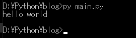
上のソースをみればimportキーワードでexample.pyを登録します。ここの重要なポイントは拡張子が必ず.pyになるべきです。
そしてexample.print_function()でexample.pyの中にあるprint_function関数を呼び出します。
こんなモジュールをディレクトリ別で管理することもできます。 このモジュールがあるディレクトリをPythonではパッケージといいます。
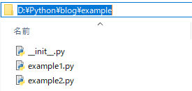
# exampleディレクトリのexample1.pyとexample2.pyを読み込む。
# つまりexampleパッケージのexample1モジュールとexample2モジュールをインポートする。
from example import example1,example2
# example1モジュールのprint_function関数を呼び出す。
example1.print_function()
# example2モジュールのprint_function関数を呼び出す。
example2.print_function()
# 関数生成
def print_function():
# コンソール出力
print("example1 call")
# 関数生成
def print_function():
# コンソール出力
print("example2 call")
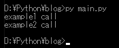
参考にディレクトリをパッケージ化するためには__init__.pyが必要です。__init__.pyがなければパッケージでインポートができません。(python3.3からは省略ができます。)
参考 - https://dojang.io/mod/page/view.php?id=2449
それなら私がexampleフォルダでtestディレクトリを生成して同じくexample1.pyファイルとexample2.pyを生成します。
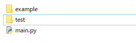
# exampleパッケージのexample1モジュールとexample2モジュールをインポートする。
from example import example1,example2
# testパッケージのexample1モジュールとexample2モジュールをインポートする。
from test import example1,example2
# この関数はtestパッケージのexample1.print_functionか？exampleパッケージのexample1.print_functionか？
example1.print_function()
example2.print_function()
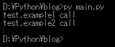
エラーは発生しないですが、import順番でexampleパッケージのexample1.print_functionを使うことができなくなりました。
この時はパッケージ再命名方法で解決できます。
# exampleパッケージのexample1モジュールとexample2モジュールをインポートする。
from example import example1, example2
# testパッケージのexample1モジュールとexample2モジュールをインポートする。
# asキーワードでモジュールの名を変わった。
from test import example1 as test1, example2 as test2
# exampleのexample1.print_functionの関数を呼び出す。
example1.print_function();
example2.print_function();
# testのexample1.print_functionの関数を呼び出す。
test1.print_function();
test2.print_function();
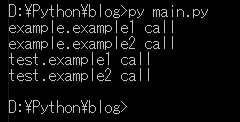
これみたいにモジュール名が同じだても再命名方法で使うことができます。
Pythonはユーザー、つまりプログラマーのためよく使うモジュールやパッケージを作成しておりましたが、これをPythonでは標準ライブラリだといいます。
link - 標準ライブラリ
例でosモジュール使ってみましょう。
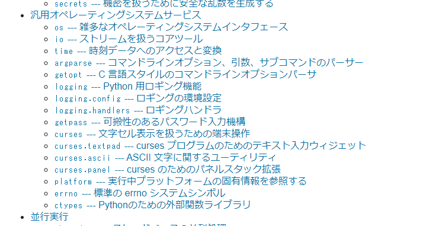
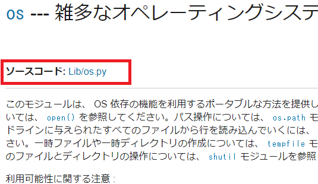
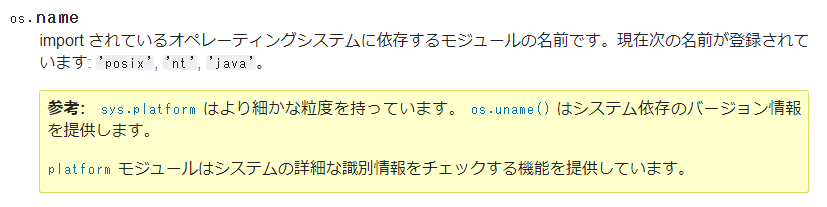
# モジュールをインポート
import os
# システム依存のバージョン情報取得
ret = os.name
# コンソール出力
print(ret)
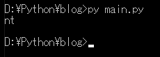
私はWindowで実行しましたので、ntという結果が出力されます。
別途でPythonファイルでimport thisということを入力して実行すればPython十戒が出力されます。
# Python十戒を出力する。
import this
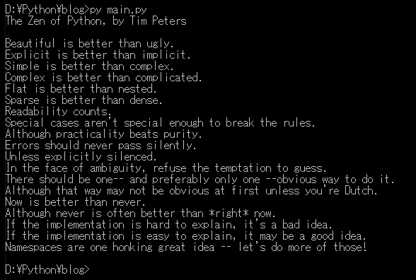
The Zen of Python, by Tim Peters Python十戒 by Tim Peters
Beautiful is better than ugly. 醜いより美しいほうがいい。
Explicit is better than implicit. 暗示するより明示するほうがいい。
Simple is better than complex. 複雑であるよりは平易であるほうがいい。
Complex is better than complicated. 込み入っているよりは複雑であるほうがいい。
Flat is better than nested. 単調なことがネストされた(重なる)ものより良い。
Sparse is better than dense. 密集しているよりは隙間があるほうがいい。
Readability counts. 読みやすいことは重要。
Special cases aren't special enough to break the rules. 特殊であることはルールを破る理由にならない。
Although practicality beats purity. しかし、実用性を求めると純粋さが失われることがある。
Errors should never pass silently. エラーは隠すな、無視するな。
Unless explicitly silenced. ただし、わざと隠されているのなら見逃せ。
In the face of ambiguity, refuse the temptation to guess. 曖昧なものに出逢ったら、その意味を適当に推測してはいけない。
There should be one-- and preferably only one --obvious way to do it. 何かいいやり方があるはずだ。誰が見ても明らかな、たったひとつのやり方が。
Although that way may not be obvious at first unless you're Dutch. そのやり方は一目見ただけではわかりにくいかもしれない。オランダ人にだけわかりやすいなんてこともあるかもしれない。
Now is better than never. ずっとやらないでいるよりは、今やれ。
Although never is often better than *right* now. でも、今"すぐ"にやるよりはやらないほうがマシなことが多い。
If the implementation is hard to explain, it's a bad idea. コードの内容を説明するのが難しいのなら、それは悪い実装である。
If the implementation is easy to explain, it may be a good idea. コードの内容を容易に説明できるのなら、おそらくそれはよい実装である。
Namespaces are one honking great idea -- let's do more of those! 名前空間は優れたアイデアであるため、積極的に利用すべきである。
Python十戒はPythonだけではなく、すべてもプログラミングする時にいつも考えなければならない言葉です。
ここまでPythonのモジュールとパッケージ(import)に関する説明でした。
ご不明なところや間違いところがあればコメントしてください。
- [Python] 17. スレッド(Thread)とロック(lock)、そしてデッドロック(deadlock)2020/06/18 00:19:45
- [Python] 16. IO(ファイル読み取り、書き込み)を扱う方法2020/06/16 18:37:00
- [Python] 15. クラスを継承する方法2020/06/15 18:20:07
- [Python] 14. クラスプロパティ(Property)2020/06/12 17:45:13
- [Python] 13. クラス関数(class method)とダック・タイピング、そして特殊メソッド2020/06/11 19:42:29
- [Python] 12. クラス(Class)を使う方法2020/06/10 19:33:33
- [Python] 11. デコレーター（Decorator）を使う方法2020/06/09 17:27:18
- [Python] 10. モジュールとパッケージ(import)2020/06/08 19:07:50
- [Python] 09. 例外処理する方法2020/06/05 17:11:47
- [Python] 08. ジェネレータ(Generator)2020/06/04 18:46:08
- [Python] 07. globalとnonlocal2020/06/03 20:34:49
- [Python] 06. 関数(function) - インライン関数、callbak、ラムダ(lambda)そしてクロージャ2020/06/02 20:51:22
- [Python] 05. コンプリヘンション(Comprehension)を使用する方法2020/06/01 19:38:58
- [Python] 04. 制御文(if, while, for, break, continue)とインデント2020/05/29 21:09:08
- [Python] 03. Pythonでリスト(list)とタプル(tuple)、そしてディクショナリ(dictionary)、セット(set)2020/05/27 18:49:08
- [C#] Redisのデータベースを接続して使い方2022/02/15 18:46:09
- [CentOS] Redisデータベースをインストールする方法とコマンドを使い方2022/02/14 18:33:07
- [Design pattern] 3-6. ステートパターン(State pattern)2021/11/17 20:04:47
- [Design pattern] 3-5. メメントパターン(Memento pattern)2021/11/16 20:01:36
- [Design pattern] 3-4. イテレータパターン(Iterator pattern)2021/11/15 19:31:28
- [CentOS] Linux環境(CentOS)でCassandra(NoSQL DB)をインストールする方法(DBeaverブラウザでNoSQL使い方)2021/11/12 17:33:58
- [Design pattern] 3-3. コマンドパターン(Command pattern)2021/11/05 17:01:42
- [Window] apache-tomcatでロードバランシング(Load balancing)する方法とセッションクラスタリング（セッション共有）2021/11/05 16:58:45
- [Window] Apacheでmod_jkとmod_proxyの差異、apacheでtomcatのwebsocketのプロキシフォーワードする方法2021/11/05 16:55:05
- [PHP] Apache環境の同じホスト中でPHPとJava(Servlet)を同時に起動、運用する方法2021/11/05 16:52:04
- [C#] 61. ウィンドウフォーム(Window form)でスレッド(Thread)を使い方、クロススレッド問題解決2021/11/04 19:29:51
- [Design pattern] 3-2. 責任の連鎖パターン(Chain of responsibility pattern)2021/11/04 19:27:58
- [Design pattern] 3-1. ストラテジーパターン(Strategy pattern)2021/11/03 18:38:52
- [C#] 60. ウィンドウフォーム(Window form)のイベント設定する方法2021/11/02 21:18:08
- [Design pattern] 2-7. ファサードパターン(Facade pattern)2021/11/02 19:32:31